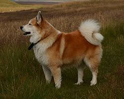
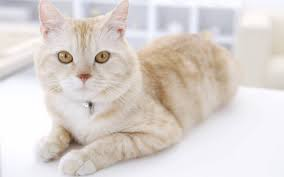
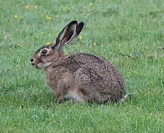

ძაღლი (ლათ. Canis) — ძუძუმწოვრების გვარი ძაღლისებრთა ოჯახისა. მათი სხეულის სიგრძე 50-160 სმ, კუდისა — 20-50 სმ, მასა 6-80 კგ აღწევს. აქვთ რამდენადმე წაწვეტებული დინგი, დაცქვეტილი ყურები, მსხვილი და მძლავრი ეშვები. იკვებებიან ცხოველებით, ზოგი ჭამს მძორს, ბოსტნეულს, ხილს, ყურძენს და სხვა. მრავლდებიან წელიწადში ერთხელ. შობენ 1-19 უსუსურ ლეკვს. გავრცელებული არიან ყველგან გარდა ანტარქტიდისა, ახალი ზელანდიისა, მადაგასკარისა, სულავესისა და სხვა ოკეანური კუნძულისა. გვარში ცხრა სახეობაა, რომელთაგან საქართველოში გვხვდება 2 (მგელი და ტურა). ძაღლის გვარს მიეკუთვნება შინაური ძაღლი (C. familiaris), რომლის წინაპარია მგელი.
კატა (Felis) — მტაცებელი ძუძუმწოვრების გვარი კატისებრთა ოჯახისა. ტანად პატარა ცხოველებია. აქვთ ვერტიკალური გუგა, ჩამალული ბრჭყალები. გავრცელებული არიან მთელ მსოფლიოში, ავსტრალიისა და მადაგასკარის გარდა. კატა აერთიანებს 29 სახეობას, რომელთაგან საქართველოში გვხვდება 4. იკვებებიან წვრილი ხერხემლიანებით, ზოგჯერ თავს ესხმიან ირემსაც. ერთგვარ ზიანს აყენებენ სანადირო მეურნეობას და მესაქონლეობას.
კურდღელი (ლათ. Lepus) — ძუძუმწოვართა გვარი კურდღლისებრთა ოჯახისა. ცნობილია 30-მდე სახეობა. მათი სხეულის სიგრძეა 44–47 სმ, მასა 5 კგ-მდე. ყურები დინგზე გრძელი აქვთ. უკანა კიდურები სიგრძით წინას მნიშვნელოვნად აღემატება. ბეწვი ხშირი და რბილია. გავრცელებული არიან ევრაზიაში, აფრიკაში, ჩრდილოეთ და ცენტრალურ ამერიკაში. საქართველოში გვხვდება რუხი კურდღელი (Lepus europaeus).[2] კურდღელთა უმრვლესობა ღია ბალახოვან ვაკეებზე ბინადრობს, რამდენიმე სახეობა — ანთროპოგენულ ლანდშაფტებსა და ტყეებში. ახასიათებთ რიცხოვნობის მნიშვნელოვანი ცვალებადობა. გადააქვთ ინფექციური დაავადებები (ტულარემია, ტაქსოპლაზმოზი და სხვ.).
